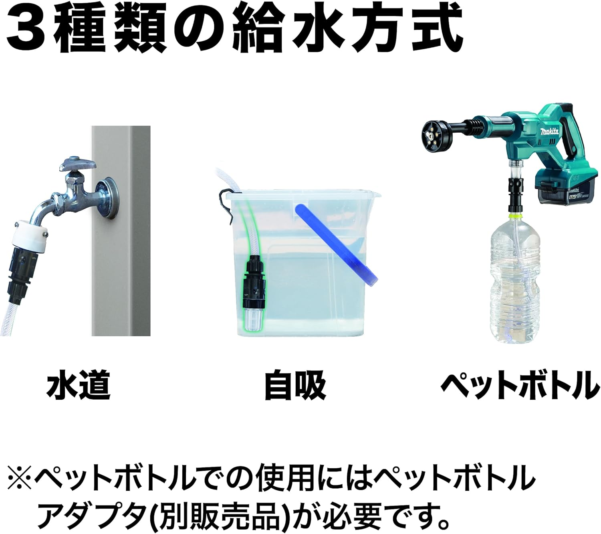

ベランダの床、網戸、自転車、玄関まわり。「ホースが届かないから」と後回しにしてきた場所を洗えるのが、バッテリー式のコードレス高圧洗浄機だ。ただ、店頭やAmazonで候補を並べると、価格帯が近いのに性格のまったく違う機種が混ざっている。今回はケルヒャー OC Handy Compact CB、マキタ MHW180DZ、スパイサー SWU-201の3機種について、公表スペックを突き合わせて選び方を整理した。比較の軸は、水圧・軽さ・駆動時間・給水方法の4つだ。
この記事の結論
- 迷ったらこれ。780gの軽さと1.5MPaのバランス ケルヒャー OC Handy Compact CBBEST 780g・最大1.5MPa・USB-C充電 — ¥14,980
- 洗浄力を最優先する人、マキタ18Vバッテリーを持っている人 マキタ MHW180DZ 水道直結2.4MPa・High約36分駆動・給水3方式 — ¥19,817（本体のみ）
- 最安で始めたい人、とにかく小さく持ち運びたい人 スパイサー SWU-201 折りたたみ式・約800g・3段階圧力切替 — ¥12,980
同じ「コードレス高圧洗浄機」でも、設計思想がまるで違う
3機種とも電源も水栓もない場所で使えるバッテリー式で、バケツなどのため水から自吸できる点は共通している。違うのはその先だ。ケルヒャーとスパイサーは片手で扱う800g前後のハンディ型で、水圧は1〜1.5MPaに抑えるかわりに取り回しを取った。一方のマキタは18V電動工具のバッテリーを流用する本格志向の設計で、水道に直結すれば2.4MPaと、家庭用の据え置き機に迫る圧力を出す。そのぶん本体は約2.1kg（バッテリ等除く）あり、しかもバッテリーと充電器は別売だ。
つまりこの比較は「どれが一番強いか」ではなく、「自分の掃除にどこまでの圧力が必要か」を決める作業になる。まず3機種の立ち位置とスペックを並べる。
| 項目 | ケルヒャー OC Handy Compact CBBEST | マキタ MHW180DZ | スパイサー SWU-201 |
|---|---|---|---|
| 参考価格 | ¥14,980 | ¥19,817（本体のみ・バッテリ/充電器別売） | ¥12,980 |
| 吐出圧力 | 最大1.5MPa（ブースト/エコの2段階） | 水道直結High 2.4MPa／自吸High 2.0MPa／Low 0.8MPa | 強1.0／中0.7／弱0.5MPaの3段階 |
| 吐出水量 | 最大150L/h | 常用High 2.5L/min（150L/h）・最大5.3L/min | 強130／中110／弱90L/h |
| 重量 | 780g（アクセサリー除く） | 約2.1kg（バッテリ・エクステンション除く） | 約800g |
| 給水方法 | 自吸（5mホース付属）・ペットボトル（水道ホース接続不可） | 水道直結・自吸・ペットボトル（別売アダプタ）の3方式 | バケツなどからの自吸（5mホース付属）・ペットボトル |
| 連続使用時間 | 約12〜30分（モード・ノズルによる） | High約36分・Low約1時間40分（BL1860B装着時） | 14〜30分（圧力・ノズルによる） |
| 電源 | 内蔵リチウムイオン7.2V 2.5Ah・USB-C充電（約3時間） | マキタ18Vバッテリー（別売） | 内蔵リチウムイオン7.2V 2500mAh・USB-C充電（約3時間） |
| 本体サイズ | 184×71×186mm（展開時） | 888×99×239mm（エクステンション装着時） | 折りたたみ時 約176×104×68mm |
| 主な付属品 | 4in1ノズル・自吸ホース5m・ペットボトルホルダー・洗浄剤ノズル・USBケーブル | 6mホース・ノズル（バッテリ・充電器は別売） | 5in1ジェットノズル・給水ホース5m・洗浄タンクキット・ペットボトルコネクター・USBケーブル |
| 購入先 | Amazon（Amazon.co.jp限定） | Amazon・楽天市場 | Amazon・楽天市場 |
| 総合スコア | 9.0 / 10 | 8.8 / 10 | 8.6 / 10 |
太字＝各項目で仕様がより優れる、または優位な項目。数値はいずれもメーカー・販売元の公表スペック。価格は執筆時点の参考価格で、変動する場合がある。ケルヒャーのUSB充電器、マキタのバッテリ・充電器・ペットボトルアダプタは別売。
水圧と軽さはトレードオフ。分かれ目は「何を洗うか」
1〜1.5MPaで足りる掃除は、思っているより多い
数字を先に整理しておくと、水道の蛇口にホースをつないだときの水圧はおおむね0.2〜0.4MPa程度とされる。ハンディ型のスパイサー（最大1.0MPa）やケルヒャー（最大1.5MPa）でも、ホースの数倍の圧力はかけられる計算になる。網戸・ベランダの床・自転車・サッシ・玄関タイルといった「汚れてはいるが、こびりついてはいない」場所なら、この水圧帯でも実用になる。
一方、マキタの水道直結時2.4MPaはケルヒャーの1.6倍にあたる。外壁の黒ずみ、コンクリートに染みた泥、車の下回りの塊になった汚れなど、「削り落とす」寄りの掃除を考えているなら、この差は効いてくる。ただし据え置き型の高圧洗浄機には7MPa超級の機種もあるので、コードレス機は全体としては「中圧」帯であることは頭に入れておきたい。
重さは1回の掃除時間を左右する
ケルヒャー780g・スパイサー約800gに対して、マキタは本体だけで約2.1kg。ここに別売バッテリー（BL1860Bで約680g）が加わるため、実際に構える重さは3kg近くになる。ハンディ2機種との差はおよそ2kg、2Lペットボトル1本分と考えると想像しやすい。片手でサッと出してサッと洗う道具として見るなら、この差は水圧の差と同じくらい重要だ。
01ケルヒャー OC Handy Compact CB｜軽さと水圧のバランスで選ぶ1台
→ どれにするか迷っている人、ベランダ・網戸・自転車が主戦場の人に。
高圧洗浄機の代名詞であるケルヒャーが、780gまで割り切って作ったハンディ機。それでいて最大1.5MPaと、ハンディ型としては高めの圧力を確保しているのがバランスの妙だ。給水は付属の5mホースでバケツから自吸するか、ペットボトルを直接挿すかの2択で、蛇口がないベランダでも完結する。充電が専用アダプタでなくUSB-Cなのも、モバイルバッテリー世代には扱いやすい仕様と言える。
良かった点
- 780gで最大1.5MPaという水圧と軽さの両立。
3機種の中で最軽量でありながら、圧力はハンディ型として上位。迷ったときの基準になる立ち位置だ。 - USB-C充電で約3時間。
専用充電器を管理する必要がなく、スマホと同じケーブルで運用できる。 - 4in1ノズルと洗浄剤ノズルが最初から付属する。
広角・直射などの切り替えと洗剤散布まで、追加購入なしで一通りそろう。 - ブースト/エコの2段階切替で駆動時間を調整できる。
モードとノズルの組み合わせ次第で最長約30分と、ベランダ1面の掃除には十分な長さだ。
気になった点
- 水道ホースへの直結はできない。
給水は自吸かペットボトルのみ。長時間の連続作業では水の補給が手間になる。 - USB充電器は別売。
ケーブルは付属するが、10W以上のUSB充電器を自分で用意する必要がある。 - Amazon.co.jp限定モデルのため楽天市場では買えない。
楽天ポイントを貯めている人には選びにくい。
ケルヒャー OC Handy Compact CBをAmazonで見る
02マキタ MHW180DZ｜水道直結2.4MPa、洗浄力で選ぶなら
→ 外壁・コンクリート・車の下回りなど頑固な汚れと戦う人、マキタ18Vバッテリーの資産がある人に。
18V電動工具で組まれた「マキタ経済圏」の一員。コードレスながら水道に直結でき、そのときの常用吐出圧力はHigh 2.4MPaと今回の3機種では頭ひとつ抜けている。給水方法も水道・自吸・ペットボトル（別売アダプタ）の3方式で最も柔軟だ。BL1860Bバッテリー装着時でHigh約36分、Lowなら約1時間40分と駆動時間も長く、「洗い切る前に電池が切れる」不安が小さい。

良かった点
- 水道直結でHigh 2.4MPa、自吸でも2.0MPa。
ハンディ2機種の1.3〜2倍以上の圧力で、こびりついた汚れに正面から対抗できる、今回では最も高圧の選択肢だ。 - 給水3方式で使う場所を選ばない。
庭では水道直結、駐車場ではバケツ自吸、出先ではペットボトルと使い分けられる。 - High約36分・Low約1時間40分の長時間駆動。
予備バッテリーを足せばさらに延長でき、外壁1面のようなまとまった作業に向く。 - 18Vバッテリーを他のマキタ工具と共用できる。
すでにマキタユーザーなら、本体価格だけで今回の3機種で最も高圧の1台が手に入る。
気になった点
- バッテリーと充電器が別売。
本体¥19,817に加え、新規にそろえると総額は3万円台後半以上になる。マキタ資産がない人はここで一度立ち止まりたい。 - 本体約2.1kg＋バッテリーで、構える重さは3kg近い。
ハンディ2機種の3倍以上で、片手でサッと使う道具ではない。 - 全長888mm（エクステンション装着時）と収納場所を取る。
ワンルームのベランダ掃除用というより、戸建て・車持ち向けのサイズ感だ。
マキタ MHW180DZをAmazonで見る 楽天市場で最新価格を見る
03スパイサー SWU-201｜折りたたんで持ち出せる最安の入門機
→ まず1万円台前半で試したい人、洗車やレジャーに持ち出したい人に。
バイク用品のサインハウスが手がける「ポケッタブル」を名乗る変わり種。ノズル部を折りたたむと約176×104×68mmと、3機種で唯一グローブボックスやリュックのポケットに収まるサイズになる。水圧は強モードで1.0MPaと控えめだが、強・中・弱の3段階切替は3機種で最多で、植木鉢まわりのような弱く洗いたい場面まで対応できる。¥12,980という価格も、コードレス洗浄機の入門としては手を出しやすい。
良かった点
- 3機種で最安の¥12,980。
バッテリー内蔵の完結型としては、コードレス洗浄機の入り口にちょうどいい価格だ。 - 折りたたみ式で、3機種の中では収納・携帯性が際立つ。
洗車道具と一緒に車載しておき、出先で使う運用が現実的にできる。 - 強・中・弱の3段階圧力切替。
2段階の他2機種より刻みが細かく、対象に合わせて弱められるのは屋外の植物まわりで効く。 - 5in1ノズルと洗浄タンクキットが付属する。
ケルヒャー同様、追加購入なしで洗剤散布までこなせる。
気になった点
- 最大1.0MPaと今回の3機種では最も控えめ。
こびりついた汚れを削る用途には向かず、砂ぼこり・泥はね・網戸あたりが守備範囲になる。 - 強モード（0°ノズル）での連続使用は14分。
強で使い続ける前提だと、1回の掃除範囲は限られる。 - 水道ホースへの直結はできない。
ケルヒャー同様、給水はバケツ自吸かペットボトルのみだ。
スパイサー SWU-201をAmazonで見る 楽天市場で最新価格を見る
まとめ｜「洗いたい場所」から逆算すれば迷わない
ベランダ・網戸・自転車といった日常の軽い掃除が目的なら、780gで1.5MPaのケルヒャー OC Handy Compact CBがもっとも外さない。軽さ・水圧・付属品・充電方式のどれにも大きな穴がなく、この記事のベストとした。外壁やコンクリートの頑固な汚れまで視野に入れるなら、答えはマキタ MHW180DZ一択になる。ただしバッテリー別売という前提だけは購入前に必ず確認してほしい。そして「高圧洗浄機がある生活」をまず1万円台前半で試したい、車に積んでおきたいという人には、折りたためるスパイサー SWU-201が気軽な入り口になる。
3機種とも「コンセントと蛇口から解放される」という価値は共通している。あとは自分が洗いたい場所に必要な水圧と、許容できる重さ・予算の交点を選ぶだけだ。